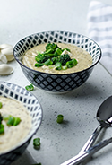
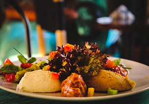
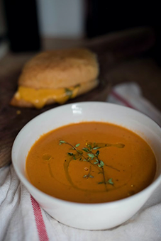
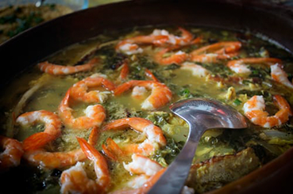
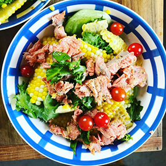

Ravintola Oula
Aukio-olo ajat
Maanantaista torstaihin 10:30 - 15:00
Perjantaina 10:30 - 15:00 ja 17:00 - 21:00
Lauantaina 17:00 - 21:00
Sunnuntaina suljettu
Lounashinta vain 11€. Sisältää ruokajuoman - vesi, kotikalja, maito!!

Maanantai
Juusto-vihanneskeittoa ja kokin sämpylä
Paistettua lohta, sinappikastiketta, tilliperunoita ja kasviksia
Marjakiisseliä ja hunajakermavaahtoa

Tiistai
Kana-fetajustosalaattia ja kokin sämpylä
Paistettua punakampelaa, pinaattikastiketta ja perunamuusia
Pannukakkua, mansikkahilloa ja kermavaahtoa

Keskiviikko
Tomaatti-yrttikeittoa ja kokin sämpylä
Kalkkunaleikettä, BBQ-kastiketta, riisiä ja kasviksia
Omenapiirakkaa ja vaniljakastiketta

Torstai
Rapukeittoa ja kokin sämpylä
Poronkäristystä, perunamuusia, puolukkahilloa ja suolakurkkuja
Hedelmäsalaattia ja kinuskikastiketta

Perjantai
Savulohisalaatti ja kokin sämpylä
Naudan paahtopaistia, punaviinikastiketta, kermaperunat ja kasviksia
Suklaamousse
Yhteystiedot
Ravintola Oula
Hallituskatu 12
96200 ROVANIEMI
Puh. (016) 555 4755
Fax (016) 555 4756
E-Mail: ravintola.oula@oulanet.fi